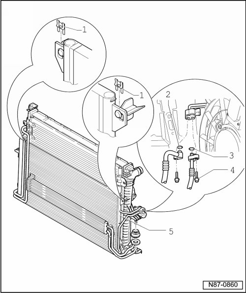

Condenser HVAC: Service and Repair
Condenser

1 Clip
2 O-ring
• Replacing
• 23.8 mm; 2.4 mm
3 O-ring
• Replacing
• 9.5 mm; 2.5 mm
4 Screws
• 12 ± 1.5 Nm
• Refrigerant line
5 Condenser
• Removing:
CAUTION!
There is a danger of ice-up.
Refrigerant leaks out if refrigerant circuit is not discharged.
Refrigerant must be extracted before opening the refrigerant circuit. If the refrigerant circuit is not opened within 10 minutes after extracting it, pressure may build up in the circuit again. The refrigerant must be extracted again.
- Extract refrigerant e.g. using A/C Service Station (VAS 6007A).
- Observe notes, refer to --> [ Engine Compartment Refrigerant Circuit Components, 2 Zone and 4 Zone ] Engine Compartment Refrigerant Circuit Components, 2 Zone and 4 Zone.
- Remove bumper cover.
- Remove bumper carrier.
Depending on engine, be careful of auxiliary cooler in front of condenser.
- Loosen the refrigerant lines at the bolts - 4 -.
- Loosen the clips from the radiator mount - 1 -.
- Swivel condenser upward out of lock carrier.